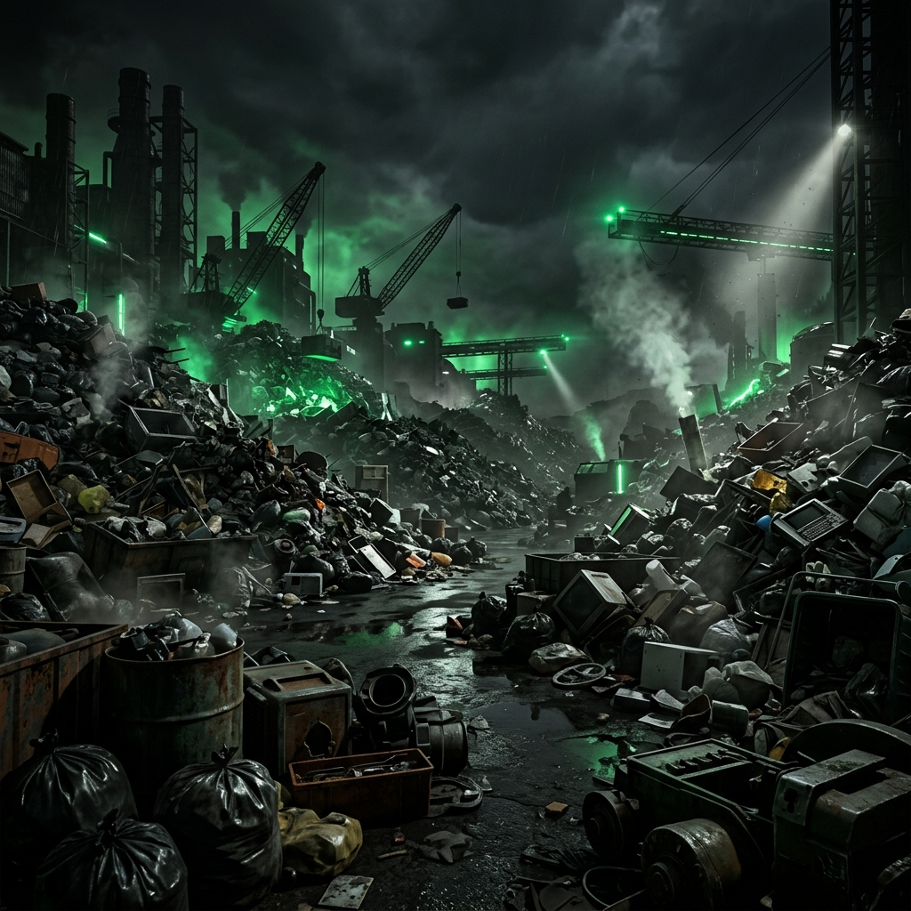
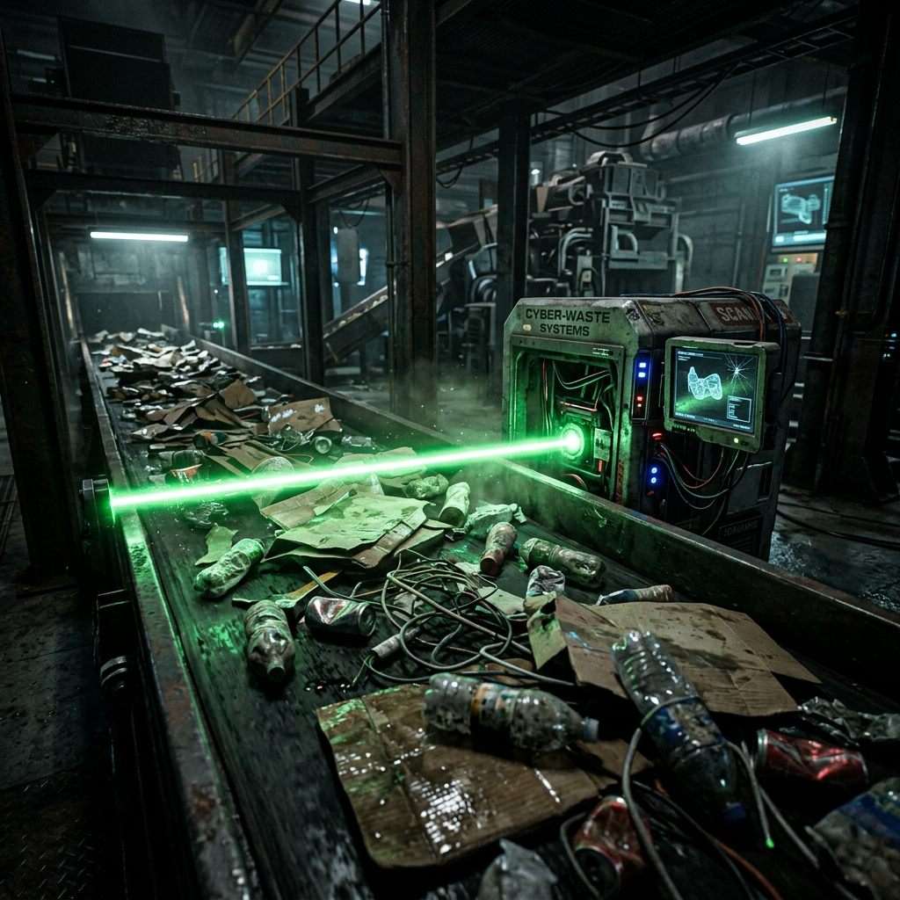
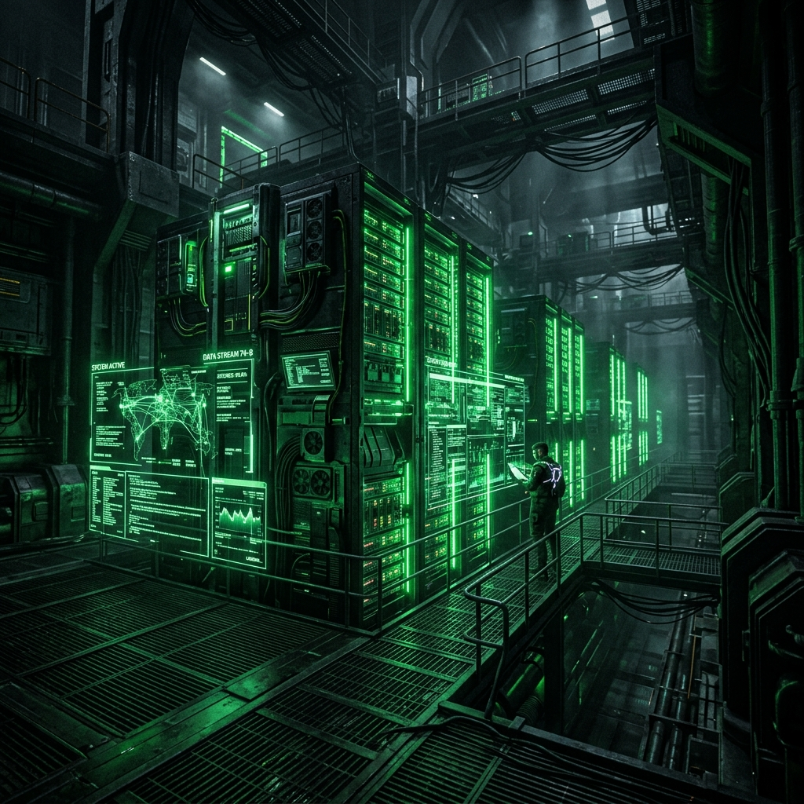
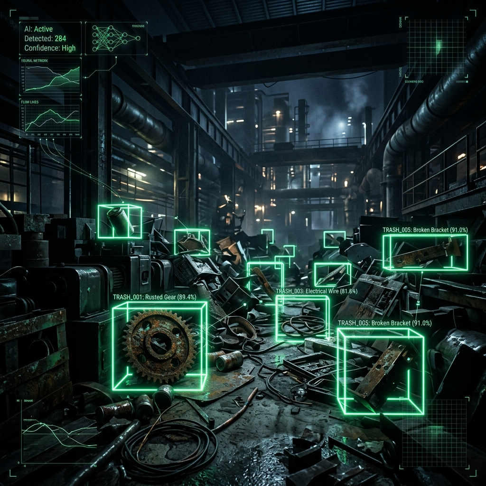
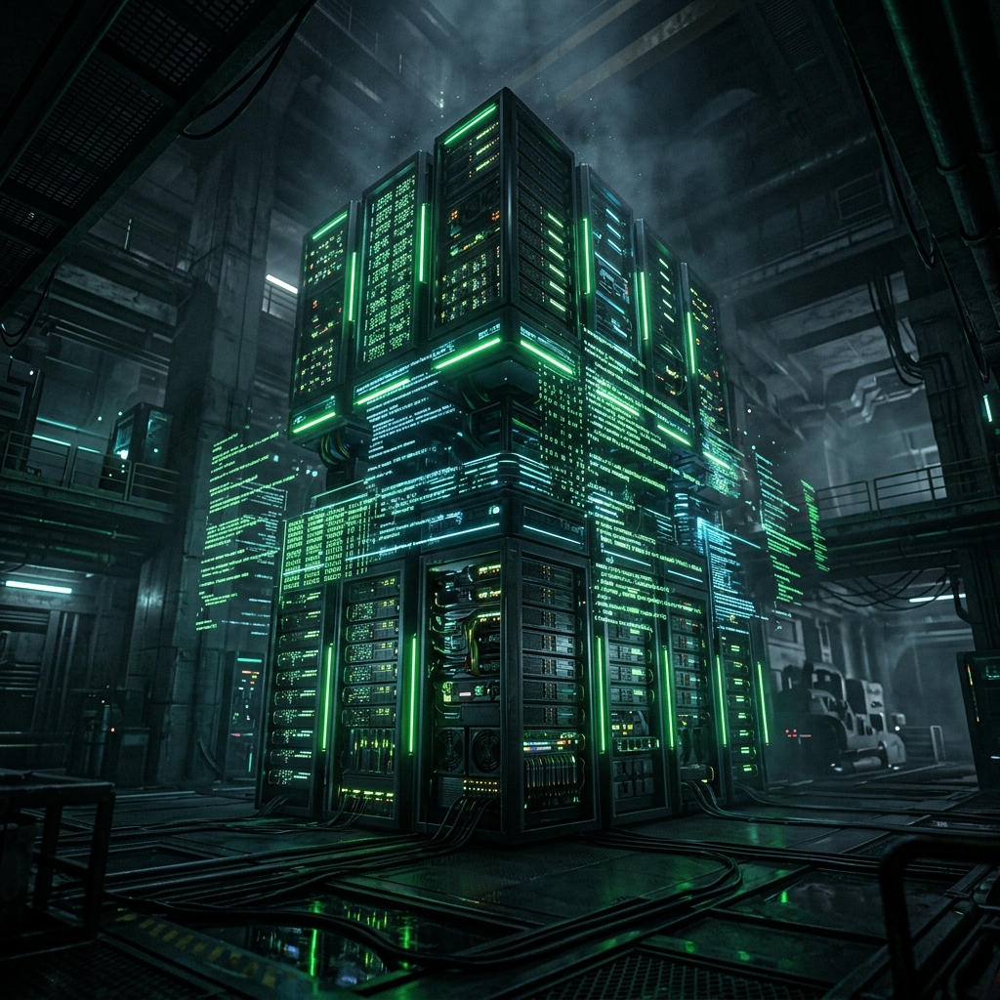
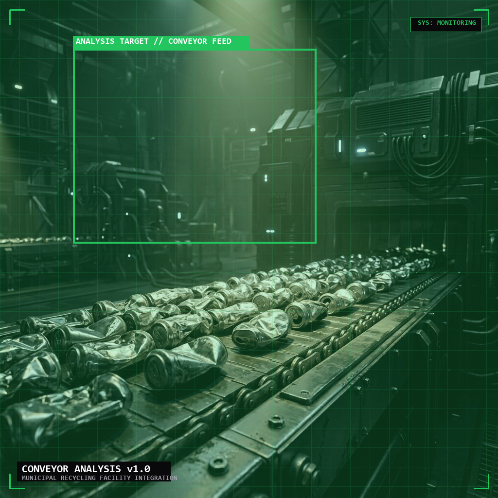
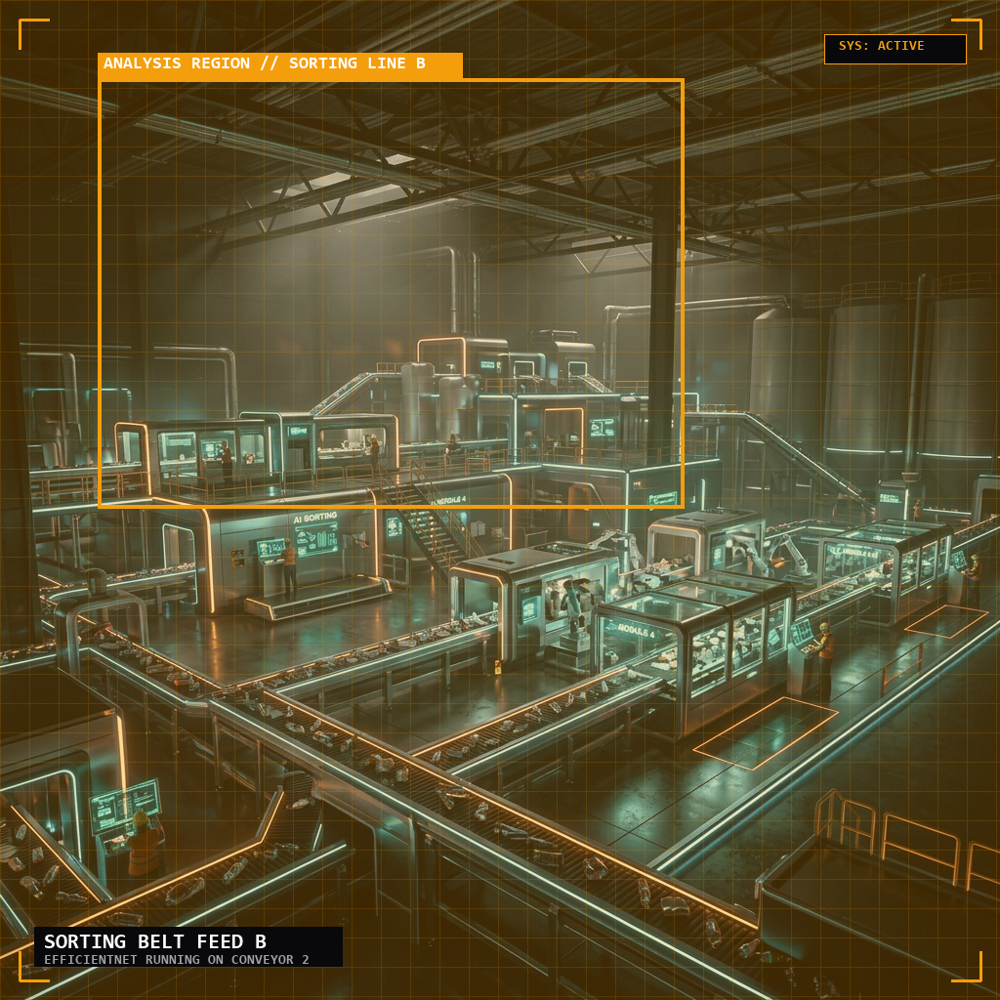
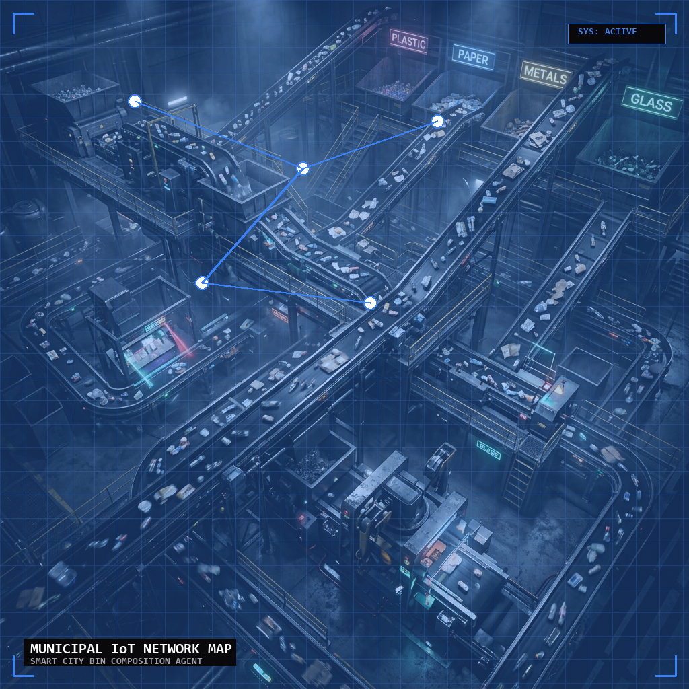
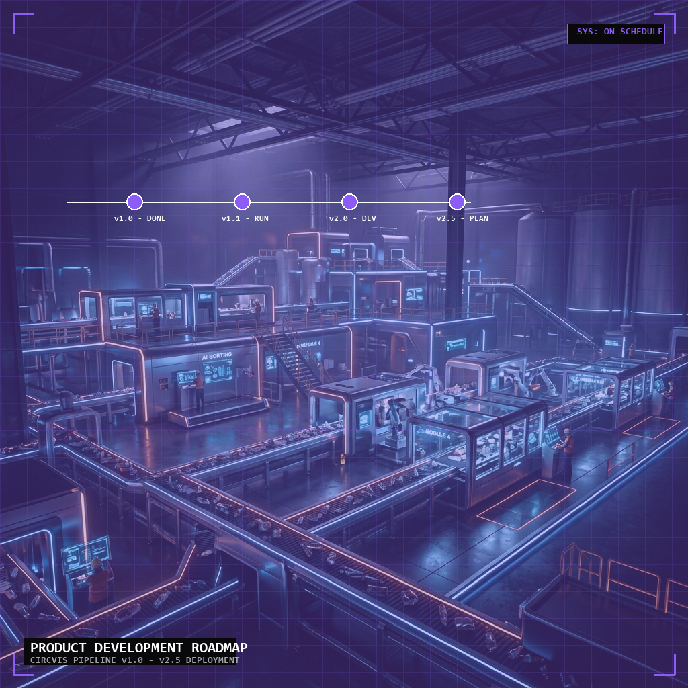
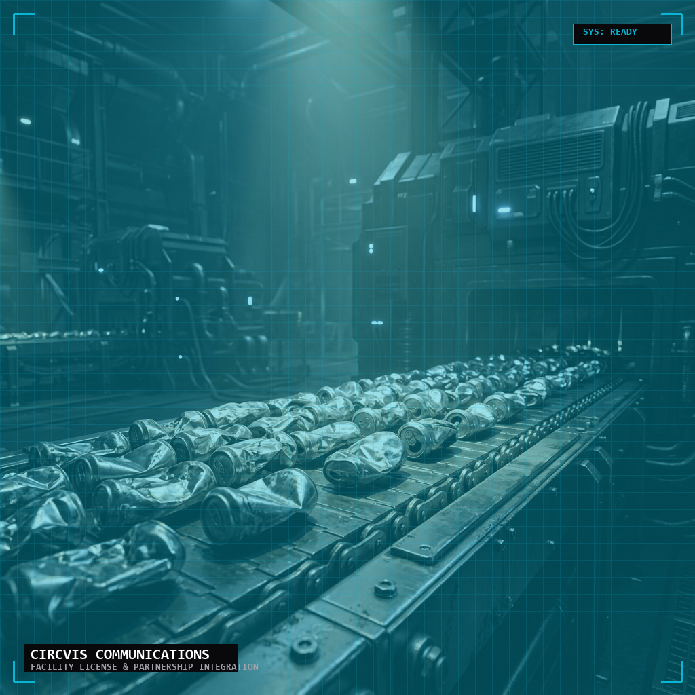

Rapid urbanization has intensified municipal solid waste to 2.12 billion tons annually. Standard image-classification models fail in real deployment due to conditions that labs never replicate.

Multiple materials clumped together make single-label classification unreliable.
Overlapping and occluded items dramatically reduce single-model confidence.
Variable illumination in landfills and MRF environments throws off colour-based features.
Faded colours and worn textures from landfill conditions fool lab-trained models.

CIRCVIS uses an ensemble of three production deep-learning architectures trained exclusively on real-world datasets — not curated lab images.


FastAPI · TensorFlow/Keras · Python 3.10+
HTML5 · Vanilla CSS · Vanilla JavaScript
Scikit-learn · OpenCV · NumPy · Pandas
Docker · Docker Compose · Kubernetes-ready

Includes: PET, HDPE, PP, PVC bottles, bags
Recyclability: 95%
Includes: Food waste, garden waste, plant matter
Recyclability: 100% compostable
Includes: Aluminium, steel, copper, cans
Recyclability: 100%

Includes: Newspapers, boxes, cardboard
Recyclability: 98%
Includes: Clear, brown, green bottles
Recyclability: 100%
Includes: Cotton, polyester, wool
Recyclability: 60%

Deploy ResNet50 ensemble on GPU servers for real-time conveyor belt sorting.
Impact: 40% faster sorting, 95%+ accuracy
MobileNetV2 on edge devices (Jetson Nano) for picking and sorting.
Impact: 45ms inference, 13 MB footprint
Edge deployment on smart bins with real-time composition tracking.
Impact: Data-driven policy, optimized routing

Ensemble models, 7-class pipeline, Web demo, REST API
Model quantization (INT8), TF Lite, Jetson Nano guide
Real-time video, advanced analytics, custom pipelines
Thermal imaging, 3D point cloud, contamination detection

Dive into our detailed system architecture, deep learning models, developer APIs, and edge deployment guides. Explore all technical aspects of CIRCVIS.
